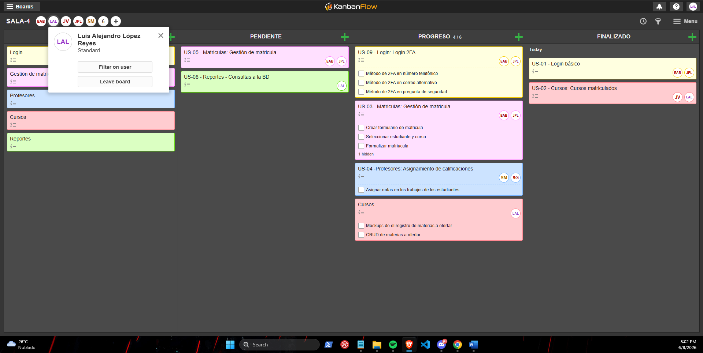

Semana 4
8 de junio de 2026
Fecha y hora
Semana 4 / 08-06-2026 (5:00 pm a 8:30 pm – Virtual)
Actividades realizadas durante la clase:
- La clase inicia con el profesor realizando la presentación, conceptos, ejemplos y demás.
- Explicación del profesor del funcionamiento del tablero de trabajo colaborativo, KanbanFlow.
- Caso 4 – En forma grupal.
Soluciones implementadas
Organización de las tareas en el tablero de KanbanFlow, trabajando con los compañeros de forma organizada y con buena comunicación.
Evidencias (capturas, código, diagramas)
Captura 1: Caso 4 que fue desarrollado en la clase virtual de forma grupal.

Reflexiones o mejoras futuras
Buena herramienta y me parece bien que se haga énfasis en tableros y formas de trabajar en equipo, importante para cuando haya que aplicarlo en un trabajo.
Notas generales
Proceso de Gestión de Requerimientos:
Para definir bien el software, se sigue un proceso estructurado que incluye:
- Elicitación: Descubrir qué se necesita mediante entrevistas o talleres.
- Análisis: Evaluar la factibilidad.
- Especificación: Documentar casos de uso.
- Validación: Verificar que sean correctos.
- Gestión de cambios: Controlar las modificaciones durante el proyecto.
Stakeholders (Partes Interesadas):
- Definición: Individuos u organizaciones (clientes, patrocinadores, equipo de desarrollo, reguladores) que tienen interés directo o indirecto en el éxito del proyecto.
- Importancia: Son vitales porque definen los requisitos, aprueban los cambios y proveen el soporte político y financiero.
- Gestión: El mayor error es no identificar a todos los stakeholders al inicio o subestimar su nivel de influencia, lo que causa comunicación ineficiente.
Estimación y Planificación:
- Estimación: Es predecir el tiempo, costo y personal necesario. Se usan técnicas como la Analogía (comparar con proyectos pasados), Paramétrica (modelos matemáticos), Técnica Delphi (consenso anónimo de expertos) o PERT (escenarios optimista, probable y pesimista).
- Planificación: Es organizar esas estimaciones. Se logra mediante la Estructura de Desglose del Trabajo (EDT) para dividir tareas, Cronogramas con dependencias y Planificación de Hitos (eventos clave).
Negociación (Método MoSCoW):
En todo proyecto hay que equilibrar el "Triángulo de Restricciones": Alcance vs. Tiempo vs. Recursos.
Para priorizar funcionalidades con el cliente se usa el método MoSCoW:
- Must have: Requisitos críticos e imprescindibles.
- Should have: Importantes, pero pueden posponerse.
- Could have: Deseables, se hacen solo si sobra tiempo.
- Won't have: Descartados explícitamente para que el proyecto no crezca sin control.
Equipos, Seguimiento y Riesgos:
- Grupos vs Equipos: Un grupo trabaja de forma individual; un equipo colabora activamente con interdependencia para lograr un resultado común.
- Seguimiento y Control: Monitorean el avance y la calidad. Se usan Métricas, Tableros Kanban o Dashboards (como Jira), y se define la "Definition of Done (DoD)" para asegurar que una tarea está 100% completada (código revisado, pruebas pasadas).
- Gestión de Riesgos: Proceso para prever amenazas (fallos, retrasos). Una vez evaluada su probabilidad e impacto, se decide una estrategia: Evitar, Mitigar, Transferir (ej. comprar un seguro) o Aceptar con un plan de contingencia.